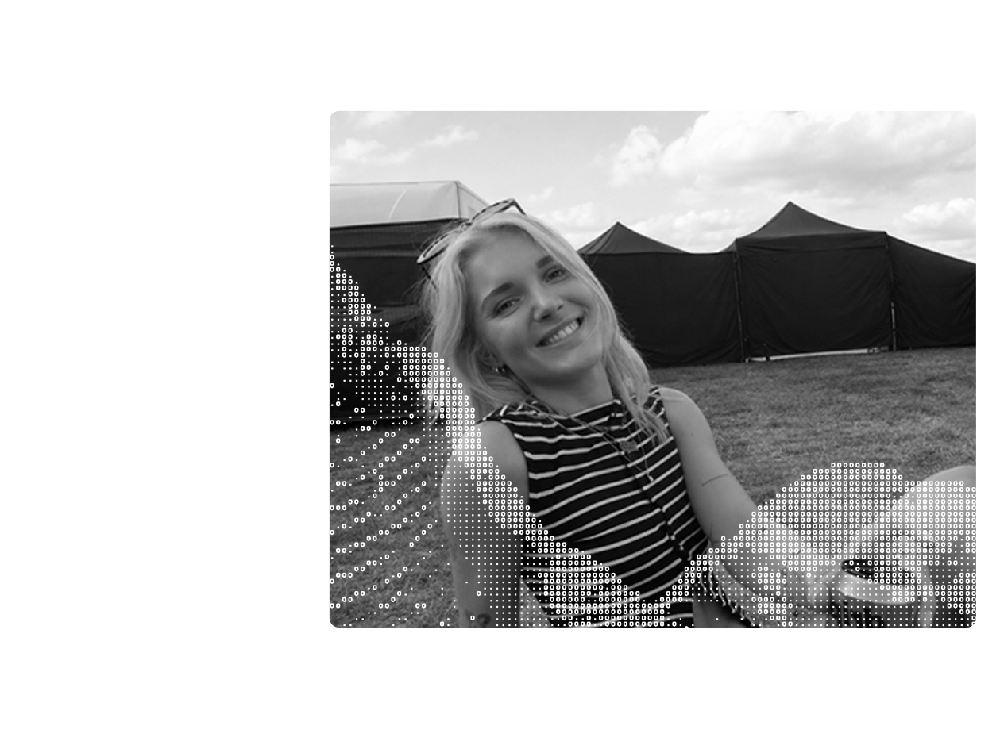
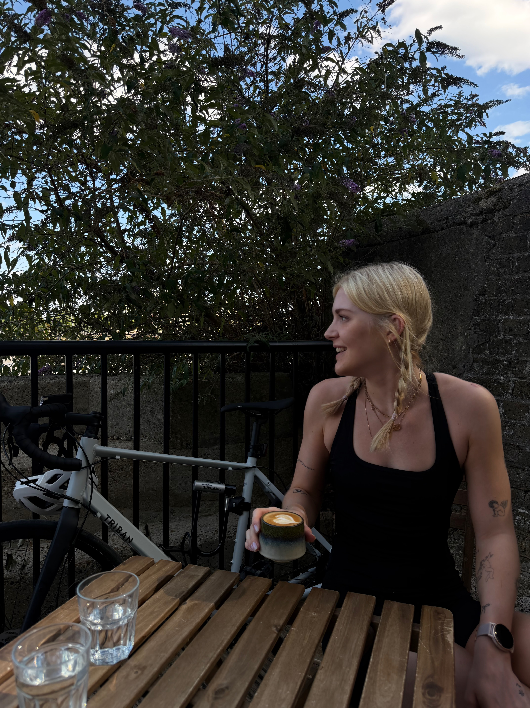

DIGITAL & PRINT DESIGN · GRAPHIC DESIGN · VISUAL IDENTITY
My creative practice is heavily influenced by live music, festivals and immersive experiences. I enjoy exploring how print, creative coding and digital technologies can come together to create visual experiences that feel interactive and engaging.
I studied Textile Design at Chelsea College of Arts alongside a Diploma in Creative Computing, graduating with First Class Honours. Beginning with print design, my practice has evolved to include generative design, creative technology and digital experiences.
Alongside my creative work, I've developed experience in content creation and digital marketing through producing social media content and building online communities.
Outside of design, you'll usually find me marathon training, hiking, cycling, or any other outdoor activities.
